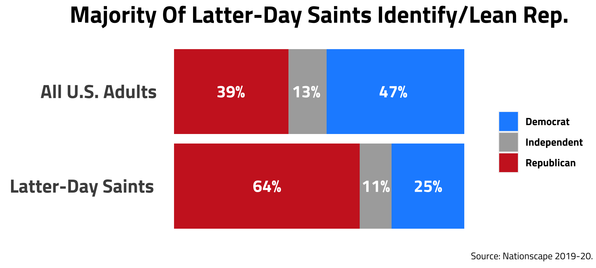
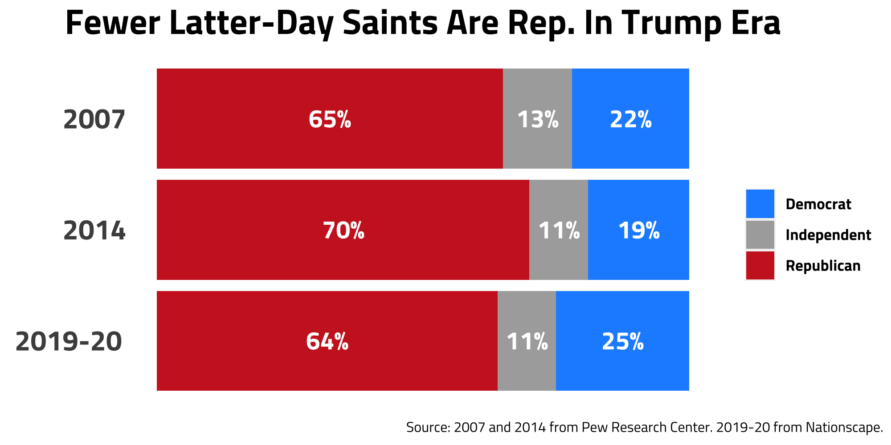
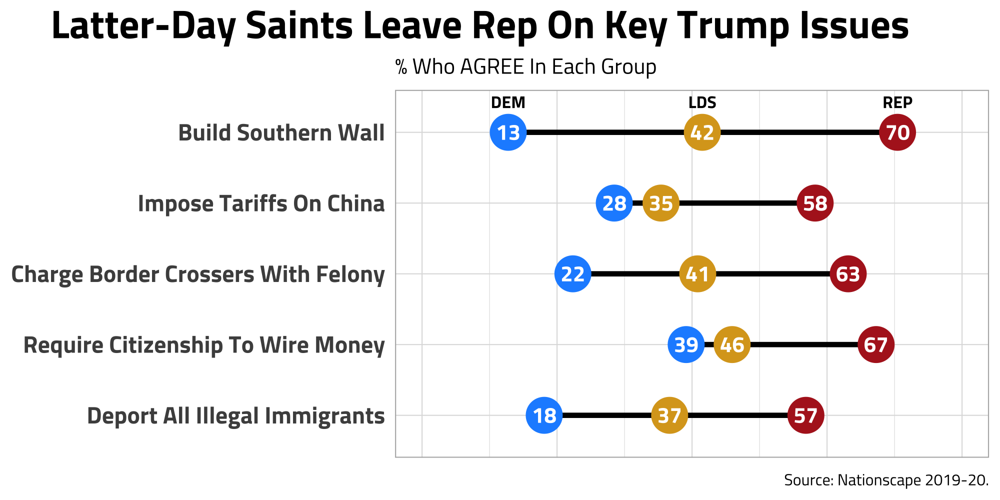
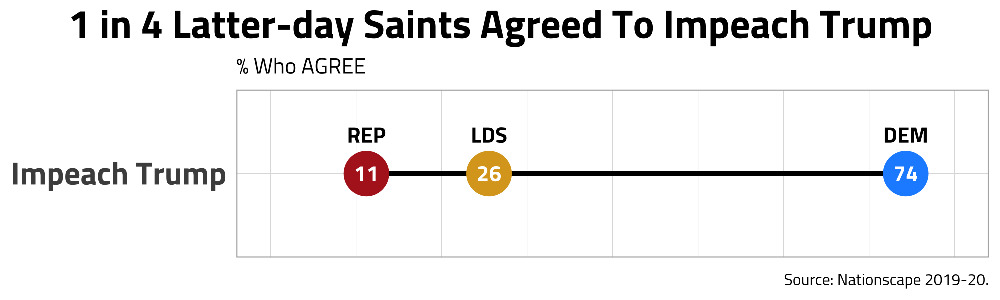
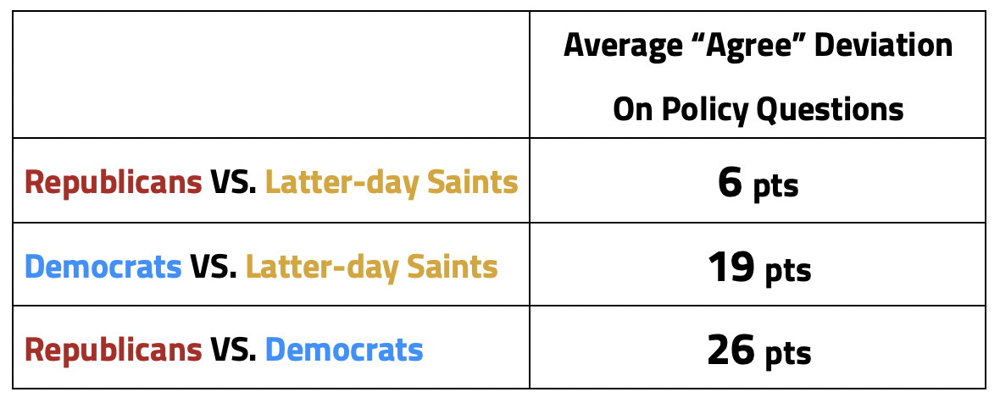
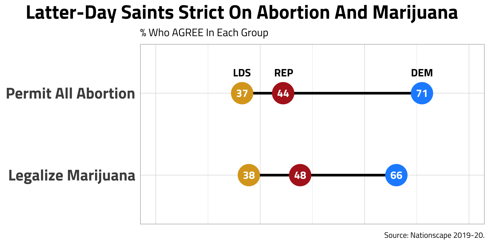

Latter-Day Saints: Growing Pains In The GOP

Introduction
Between Mitt Romney’s nomination in 2012 and present times, the Republican Party has seen shifts in make-up and goals. In 2016, Trump tapped into a somewhat different base than previous Republicans - appealing strongly to non-college whites. Policy-wise, Trump has been more aggressive with border-controls, pushing domestic production, and tougher on some foreign players like China. But, while some groups have been more supportive of the evolving GOP platform, others have drifted further from it.
Latter-day Saints (Mormons) are perhaps a good example of this. In Utah’s 2016 presidential vote cast, Evan McMullin - a third-party candidate - won more than 1/5 of Utah’s ballots. Even in the 2020 election, while many more Utahns supported Trump than in 2016, Trump only garnered 58% of the votes (compared to Romney’s 73% in 2012).
In this post, I am interested in diving further into Latter-day Saint political trends and learning of possible pressure points for them in the new GOP.
Data
The Democracy Fund and UCLA released data from one of the largest public opinion surveys ever conducted including 156,000 cases collected from July 2019–July 2020. More info on this here. After combining these surveys, I was able to get a large Latter-day Saint sample of n=3787.
So… What did I find?
Let’s first take a look at a few summary statistics to see how Latter-day Saints break out.

Like previous studies have found, Latter-day Saints are a much more Republican group when compared to the United States in general; however, 1 in 4 Latter-day Saints identify or lean Democrat.
(Side note: In these figures, Republicans and Democrats include those who identify with the Republican/Democrat Party AND those who initially identify as Independent, but then say they vote/lean more Republican than Democrat or vice versa. This may seem like a confusing practice, but it is common for data to be reported this way because some scholars find Independent leaners behave almost indistinguishably from regular partisans. Typically, when others visualize party break data, they will specify whether leaners are included.)
So, what does this look like over time?

In this figure, we can see more Latter-day Saints identified and leaned Republican in 2014 than in both 2007 and 2019-20. This isn’t too surprising as the Republican nominee in 2012 was Mitt Romney, a Latter-day Saint. But, as we hypothesized, the number of Republican Latter-day Saints in 2019-20 has not only dropped lower than 2014, but also perhaps lower than it was previously in 2007. Also, more Latter-day Saints are identifying as Democrats (+6 from 2014).
I would have included more snapshots of Latter-day Saint party identification over time, but because they only make up ~1.5% of the population, it can be hard to find data with sufficient sample sizes to make inferences about their population. Thankfully, Pew Research Center every so often puts out the “Religious Landscape Study” with a large enough sample to study smaller religious groups. I used this study to fill in the 2007 and 2014 data points in the figure above.
Why Are We Seeing A Decrease In Latter-day Saint Republicans?
In the Nationscape Survey, respondents were asked a series of policy questions from healthcare, to economics, to legalization of marijuana. Seeing how Latter-day Saints respond to these questions may give us some insight as to why we are seeing some Latter-day Saints leave the Republican Party.
Shown below are the issues where Latter-day Saints had the largest percentage point differences from Republicans in the Democratic direction.

Interestingly, all of these issues are related. Four of the five policies are about immigration, and all of them have been supported by Trump (or were actions he took). The biggest point difference between Republicans and Latter-day Saints - building the Mexico wall - was a central focus in Trump’s 2016 campaign platform and something he pushed throughout his presidency. In this, we see Latter-day Saints showing resistance to key Trump policies and actions with foreign players (as seen in many disagreeing on imposing tariffs on China) which suggests some distaste for Trump.
Latter-day Saints also noticeably lean left on immigration issues. As it turns out, our immigration finding is nothing new. Others have noted this and especially among Latter-day Saints who served foreign church service missions (usually 1.5-2 years in duration). But, to me, the main takeaway from this figure is Latter-day Saints reveal at least one way why they are hesitant toward Trump: his stance on immigration.
We also may see distaste for Trump in this impeachment question.

Only 1 in 4 Latter-day Saints agreed with this compared to almost 3 in 4 Democrats. However, even though Latter-day Saints are much closer to Republicans than Democrats on impeaching Trump, Latter-day Saints actually are almost twice as far from Republicans on this issue as they are on average(more on averages in the next section). In that, we see more evidence of some Latter-day Saint hesitancy toward Trump.
So Why Do Latter-day Saints Stick Around With The GOP?
It is important to note that while the figure above shows the largest point deviations from Republicans, Latter-day Saints still don’t match Democrat levels of agreement on ANY issue analyzed in this survey (though some issues Latter-day Saints are fairly close to Democrats like “imposing tariffs on china”). Most of the time, Latter-day Saints are closely aligned with Republican agreement levels, and sometimes they agree more in the Republican direction on issues than Republicans themselves. A full list of policies questions and agree percentages is found here.
I created a below table describing the average difference between each group’s responses to the various policy questions.

As you can see, Republicans and Latter-days Saints are a lot closer together than Democrats and Latter-day Saints on average policy agreement levels. In fact, on average Latter-day Saints and Democrats are almost as far apart as Republicans and Democrats.
Let’s dive more into what these numbers mean. Among the policy questions that were asked, for example, “Should we raise taxes on families making over $600,000?” If 40% of Republicans agreed with this statement, Latter-day Saints agreeing would on average fall 6 points apart of 40%, so perhaps Latter-day Saints would report 46% agreeing. And Democrats would fall at 26 points away on average, so perhaps 66% of Democrats agree. This just shows that policy-wise Latter-day Saints were significantly closer to Republicans than Democrats on average. The actual numbers for this question are 76% of Democrats, 51% of Republicans, and 49% of Latter-days Saints agree.
On most all other issues - healthcare, size of government, family values - Latter-day Saints are closely aligned to the Republican Party.
But enough on this.
What Issues Exactly Do Latter-day Saints Lean the Furthest Right?
Another reason Latter-day Saints stick around is shown in the next figure. Below are the issues where Latter-day Saints leaned the furthest RIGHT by percentage point. These could represent the conservative positions Latter-day Saints cling to most strongly.

I belieive Latter-day Saints stick around because some church teachings are closely aligned with conservative policy positions.
For example, it is a commandment for Latter-day Saints not to use marijuana recreationally. The Latter-day Saint prophet has also taught abortion to be wrong except in special cases (rape, incest, and mother’s life). Some teachings - like these - are directly aligned with conservative positions on social freedoms.
Wrap Up
That last bit helped convince me that not only are Latter-day Saints sticking around right now, but also I don’t anticipate any large movements of Latter-day Saints to the Democratic Party in near future. I say this because while there are evidences of Latter-day Saint growing pains in the Republican Party with Trump and new stances on immigration, these simply won’t overpower the long tradition of Latter-day Saint voting patterns. The church itself doesn’t choose sides, but Latter-day Saints have traditionally voted for policies that restrict social freedoms to boundaries consistent with church teachings.
However unlikely, I think it is possible that this tradition changes. I could potentially see a world where Latter-day Saints applied prophetic teachings in their personal lives, and voted for many socially liberal policies as the GOP continued to hit more pressure points and elect more Trumps. I don’t think this will happen, but I do believe that the evolving GOP platform has got at least a few Latter-day Saints thinking about some of this.
Thanks for reading! Would love to hear your thoughts about my work. Also, please feel free to share with others if you found it interesting 😀
Appendix
My table I referenced in the article is here. My code is viewable here.
Also, thanks to these authors and their work… I got the idea from @RyanBurge here
Democracy Fund + UCLA for the surveys and making them public
@CL_Rothschild for the dumbbell charts
@hrbrmstr for the dumbbell charts
@littlemissdata for the table in the appendix